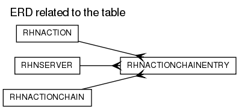

RHNACTIONCHAINENTRY
DDL scriptColumns
| Name | Type | Nullable | Default value | Comment |
|---|
| ACTIONCHAIN_ID | NUMBER(38) | N | | |
| ACTION_ID | NUMBER(38) | Y | | |
| SERVER_ID | NUMBER(38) | N | | |
| SORT_ORDER | NUMBER(38) | N | | |
| CREATED | DATE | N | (SYSDATE) | |
| MODIFIED | DATE | N | (SYSDATE) | |
Foreign Keys:
Options:
| Option | Settings |
|---|
| Tablespace | USERS |
| Index Organized | No |
| Generated by Oracle | No |
| Clustered | No |
| Nested | No |
| Temporary | No |
Indexes:
| Index Name | Type | Unuqueness | Columns | DDL script |
|---|
| RHN_ACTCHAINENT_AID_UQ | NORMAL | UNIQUE | ACTION_ID
| DDL script |
Triggers
RHN_ACTCHAINENT_MOD_TRIG
Legend: string keyword reserved word operator
CREATE TRIGGER
rhn_actchainent_mod_trig
BEFORE INSERT OR UPDATE ON rhnActionChainEntry
FOR EACH ROW
REFERENCING NEW AS NEW OLD AS OLD
BEGIN
:new.modified := sysdate;
END;